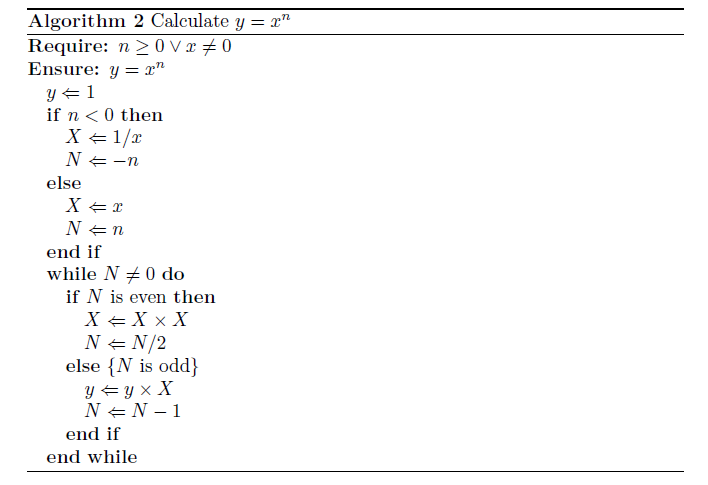

软件安装
记录常用软件的安装信息
中文输入法安装
步骤1. 下载必要库
sudo apt install libopencc1 fcitx-libs fcitx-libs-qt
sudo dpkg –i sogoupinyin_2.0.0.0078_amd64.deb
步骤2. fcitx 环境变量配置
参考fcitx输入法打死切换不出来, 在 ~/.xprofile 中写
export GTK_IM_MODULE=fcitx
export QT_IM_MODULE=fcitx
export XMODIFIERS=@im=fcitx
步骤3. 中文输入法配置
- 在Language Support中增加汉语，然后选择输入法系统为fcitx
- 重启系统
- 在Text Entry中增加Sogou Pinyin
- 使用Ctrl+space即可开启搜狗输入法
步骤4. 特殊字符修复
参考 ubuntu中shift键打不出特殊符号, 将输入源英语（英国）改成英语（美国）, 则 # @ 显示正常
markdown 常用使用快捷键
参考markdown语法大全 和 段落与换行
- 段落的前后必须是空行
- 段内每行换行，可以行尾+2空格
- 插入代码前需要换行， 四个空格表示代码段
- 使用 *，+，- 表示无序列表, 特殊字符前加\
- 使用  插入图像
- 使用 [描述](链接地址) 为文字增加外链接。
- 使用 `代码` 表示行内代码块。
- 使用 一对```区隔代码段
- 使用 > >> >>>等段落缩进
atom
atom install jupyter notebook package
- install node.js npm node-gyp
- fix bug at line 34 In main.js at
/home/$USER/.atom/packages/jupyter-notebook/lib
参考fix notebook bug- install jupyter notebook package
conda使用不同版本python
#step 1. create python env
#py27 for python2.7
conda create -n py27 python=2.7 anaconda
#py36 for python3.6
conda create -n python36 python=3.6 anaconda
#change default to python2.7 - activate py27
activate py27
#verify new env
conda info --envs
python --version
node.js 是用来做什么的?
一种javascript的运行环境， 能够使javascript 脱离浏览器运行
npm模块安装机制简介
npm 是node的模块管理器，通过npm install相关命令 就能安装别人写好的模块。
windows下安装node-gyp
gyp是一种根据c++源代码编译的工具， node-gyp是为node编译c++扩展时候使用的编译工具。
`npm install --global --production windows-build-tools` (use python2.7 env)
jupyter notebook
使用jupyter notebook 制作slideshow
参考How to Create a Slideshow using Jupyter+Markdown+Reveal.js
参考左手程序员，右手作家：你必须会的Jupyter Notebook
- shell open jupyter notebook
- create new notebook in website
- change view cell toolbar to slideshow and save
- download reveal.js(
git clone https://github.com/hakimel/reveal.js.git)- convert to html slideshow : use
jupyter-nbconvert --to slides ml.ipynb --reveal-prefix=reveal.js- open html slideshow in web
- convert html to pdf change
file:///D:/cloud/document/documents/ml/ml.slides.html#/tofile:///D:/cloud/document/documents/ml/ml.slides.html?print-pdf#/
jupyter notebook 使用latex
latex官网
LaTeX – A document preparation system 论文公式排版
conda install latex
conda install -c conda-forge miktex (使用proxifier & ss 翻墙安装速度快)
How to write LaTeX in IPython Notebook?
use %%latex in jupyter notebook cell
jupyter notebook 转PDF
- conda install texlive
conda config --add channels clinicalgraphicsconda install -c clinicalgraphics texlive-core
- conda update tlmgr
- download update-tlmgr-latest.exe from http://mirror.ctan.org/systems/texlive/tlnet/update-tlmgr-latest.exe
- 执行update-tlmgr-latest.exe, 安装目录选择
anaconda\Library
- tlmgr install pkg
tlmgr install ucstlmgr install collectboxtlmgr install adjustboxtlmgr install enumitemtlmgr install collection-fontsrecommended
jupyter nbconvert ml.ipynb --to pdf- 另一种转换pdf方法
jupyter nbconvert ml.ipynb --to latexpdflatex ml.tex
latex tutorial
(markdown 只支持latex公式， 不支持排版)
\begin{algorithm}
\caption{Calculate $y = x^n$}
\label{alg1}
\begin{algorithmic}
\REQUIRE $n \geq 0 \vee x \neq 0$
\ENSURE $y = x^n$
\STATE $y \Leftarrow 1$
\IF{$n < 0$}
\STATE $X \Leftarrow 1 / x$
\STATE $N \Leftarrow -n$
\ELSE
\STATE $X \Leftarrow x$
\STATE $N \Leftarrow n$
\ENDIF
\WHILE{$N \neq 0$}
\IF{$N$ is even}
\STATE $X \Leftarrow X \times X$
\STATE $N \Leftarrow N / 2$
\ELSE[$N$ is odd]
\STATE $y \Leftarrow y \times X$
\STATE $N \Leftarrow N - 1$
\ENDIF
\ENDWHILE
\end{algorithmic}
\end{algorithm}

latex 公式速查手册
latex搭配MathType
- MathType 6.9+ 编辑公式， 预置->剪切和复制预置->MathML 或Tex, 记住取消勾选后面的两个方框,然后点击“确定”， 得到latex 公式代码
域名服务器后台搭建及和微信公众号之间的通信
godaddy + dnspod + vps 搭建web blog
- godaddy 申请域名
www.wzx1102k.com - dnspod 添加VPS IP 和域名的映射， 添加
www A和@ A - godaddy 添加dnspod DNS解析服务器
f1g1ns1.dnspod.net和f1g1ns2.dnspod.net - 测试是否绑定成功， 命令行
ping www.wzx1102k.com，无丢失则映射成功 - VPS上一键安装SQL、PHP SERVER， 持续20分钟左右
- VPS配置域名和DB
lnmp vhost add - 通过Filezilla 上传wordpress 安装包(或服务器上直接下载)， 内容直接解压到
www.wzx1102k.com 通过访问
www.wzx1102k.com来一步步使用wordpress配置blogwget -c http://soft.vpser.net/lnmp/lnmp1.2-full.tar.gz && tar zxf lnmp1.2-full.tar.gz && cd lnmp1.2-full && ./install.sh lnmp
- godaddy 申请域名
微信公众号 + VPS服务器配置
- VPS域名配置参照godaddy配置blog方案
安装webpy和python-lxml
git clone git://github.com/webpy/webpy.git ln -s `pwd`/webpy/web cd /root/webpy sudo python setup.py install sudo apt-get install python-lxml编写服务器get/post python code，路径放置在之前创建好的域名目录下(
/home/wwwroot/www.wzx1102k.com)微信公众平台->开发->基本配置->服务器配置绑定域名和token (token 和服务器code中设置保持一致)
通过微信发送测试文本/图片致公众号进行测试，如提示"该公众号提供的服务出现故障"等内容，可使用如下工具调试。
google cloud
colab use google gpu
参考 想免费用谷歌资源训练神经网络？Colab 详细使用教程 —— Jinkey 原创 薅资本主义羊毛，用Google免费GPU
- 在google云端硬盘更多中添加colaboratory应用
- 新建colaboratory笔记本(.ipynb)
- 连接到申请的免费google cloud (300$/年)， 输入验证token key
!apt-get install -y -qq software-properties-common python-software-properties module-init-tools
!add-apt-repository -y ppa:alessandro-strada/ppa 2>&1 > /dev/null
!apt-get update -qq 2>&1 > /dev/null
!apt-get -y install -qq google-drive-ocamlfuse fuse
from google.colab import auth
auth.authenticate_user()
from oauth2client.client import GoogleCredentials
creds = GoogleCredentials.get_application_default()
import getpass
!google-drive-ocamlfuse -headless -id={creds.client_id} -secret={creds.client_secret} < /dev/null 2>&1 | grep URL
vcode = getpass.getpass()
!echo {vcode} | google-drive-ocamlfuse -headless -id={creds.client_id} -secret={creds.client_secret}
- 将google云端硬盘链接到google cloud
!mkdir -p drive
!google-drive-ocamlfuse drive
- 查看google cloud gpu 设备是否可以使用
from tensorflow.python.client import device_lib device_lib.list_local_devices()